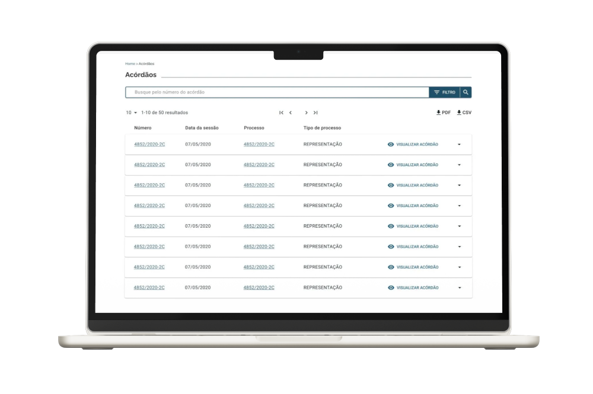

— CASE · CONECTA-TCU · SENIOR PRODUCT DESIGNER · 2018–2022 —
End-to-End Design Process — Como liderei a criação e a evolução do CONECTA-TCU.
Da prancheta à consolidação como o principal canal de comunicação, consulta e acompanhamento de processos do TCU
Como Product Designer especialista, liderei o ciclo completo de experiência do usuário do CONECTA-TCU. Transformei a comunicação processual do Tribunal de Contas da União, conduzindo do diagnóstico inicial, entrevistas e Design Sprints até a definição da arquitetura, Design System, usabilidade quantitativa e acessibilidade eMAG.

CONECTA-TCU · Ecossistema Digital Governamental · 2018–2022
Contexto: o tribunal antes do CONECTA-TCU
DIAGNÓSTICO DA JORNADA ANALÓGICA · CICLO TOTAL DE ATÉ 90 DIAS
Segundo dados do CNJ, o Judiciário brasileiro somava dezenas de milhões de processos. No Tribunal de Contas da União, a comunicação processual operava sob uma pesada infraestrutura analógica. O envio de processos, acórdãos e determinações dependia majoritariamente do fluxo físico através dos Correios.
O diagnóstico inicial da jornada revelou dois gargalos operacionais: o Tempo de Ciência (envio do ofício, assinatura do AR físico e retorno ao TCU) consumia em média 15 dias. Como consequência dessa barreira física, o ciclo completo de resolução de uma determinação arrastava-se por até 90 dias, consumindo milhões em remessas postais e gerando pouca transparência pública.
O CUSTO DA ESPERA: DIAS PERDIDOS NO TRÂMITE POSTAL
02 — o desafio
O papel contra o tempo
"Como podemos promover transparência e comunicação mais assertiva e célere com os demais órgãos da administração pública?"
Para eliminar a burocracia processual, defini junto aos stakeholders que o sistema precisava entregar quatro resultados vitais:
- Facilidade de consulta e visualização centralizada de processos, acórdãos e determinações expedidas pelo TCU;
- Diminuição drástica do tempo e custos para envio e recebimento de comunicações oficiais;
- Redução de burocracia na tramitação e respostas a diligências;
- Transparência ativa e passiva no acompanhamento dos prazos e acesso aos autos.
03 — pesquisa & discovery
Escuta qualificada e arqueologia do processo
Mapeamos todo o fluxo analógico através de entrevistas exploratórias com Product Owners, auditores de controle e gestores públicos. Identificamos que as respostas podiam levar de 30 a 90 dias e conter centenas de páginas impressas.
PERFIS DE USUÁRIOS MAPEADOS
- Auditores de Controle Externo (TCU)
- Auditores e Gestores de Órgãos Públicos
- Advogados e Representantes Legais (AGU)
FERRAMENTAS APLICADAS
- Product Backlog Building (PBB) com POs
- Entrevistas Qualitativas com Usuários
- Design Sprint focado em Público Externo
Consulte os documentos oficiais da investigação:
Design Sprint Sway ·
Relatório em PDF

WORKSHOP DE PRODUCT BACKLOG BUILDING (PBB)
PERSONAS E FLUXOS DE TRABALHO ESTRUTURADOS

Persona 1: Auditor do TCU

Persona 2: Gestor do Órgão Público

Persona 3: Advogado da AGU
04 — estratégia
Estratégia de releases e Arquitetura de Informação
Diante da complexidade regulatória, organizamos as funcionalidades mapeadas no PBB em 6 releases incrementais, garantindo estabilidade e curva de aprendizado suave para os servidores:
Design Sprint & MVP
Design Sprint com servidores externos, testes do protótipo e lançamento do MVP para órgãos-piloto.
Lançamento Público & Escala
Expansão para milhares de órgãos, integração do sistema TCU-GERENCIAL e conformidade eMAG.
A grande decisão estratégica de UX foi fragmentar a Arquitetura da Informação em 3 visões customizadas: Perfil de Consulta, Perfil de Operador de Comunicações e Perfil de Advogado/Representante Legal. Isso eliminou a poluição visual de funções irrelevantes e garantiu foco total na tarefa do usuário.
05 — entregamos
Pilares fundamentais da solução
Ciência Digital & Notificações
Troca do envio postal por notificações eletrônicas imediatas com controle de prazos e assinatura digital declaratória com validade jurídica.
Design System & Acessibilidade eMAG
Implementação rigorosa do Modelo de Acessibilidade em Governo Eletrônico (eMAG/WCAG), cobrindo leitores de tela, alto contraste e navegação por teclado.
Painel TCU-GERENCIAL
Sistema analítico desenvolvido para armazenar e apresentar métricas estatísticas diárias de uso, desempenho e gargalos do CONECTA-TCU.
EVOLUÇÃO DA PROTOTIPAGEM: SPRINT → BAIXA FIDELIDADE → ALTA FIDELIDADE

Design Sprint: Protótipo Inicial

Wireframe Baixa Fidelidade: Grid de Cards

Alta Fidelidade: Pendências

Alta Fidelidade: Meus processos
06 — evolução
Processo rigoroso de UX aplicado do início ao fim
O desenvolvimento seguiu o ciclo completo de User Experience Design:
Descoberta
Entrevistas e mapeamento da jornada física dos Correios (ARs e prazos).
Definição
PBB, Personas e priorização do backlog em 6 releases estratégicas.
Ideação
Desenho dos fluxos de tarefas e Arquitetura da Informação por perfil de usuário.
Prototipação
Ititorações em baixa e alta fidelidade com foco em interfaces modulares.
Métricas de Usabilidade
Avaliação quantitativa moderada via System Usability Scale (SUS).
Acessibilidade eMAG
Implementação e validação de 18 recomendações prioritárias de inclusão digital.
07 — validação quantitativa
System Usability Scale (SUS) — Score 82.5
Para medir satisfação, efetividade e eficiência, realizamos testes de usabilidade moderados online com 50 usuários reais, aplicando o protocolo científico da escala SUS (10 perguntas em escala Likert de 1 a 5).
A pontuação média alcançada foi de 82,5 pontos, posicionando o sistema na faixa de **excelência em usabilidade** para plataformas corporativas complexas.

Pontuações por participante e Média Geral SUS

Distribuição por Frequência da Escala SUS
08 — resultados & impacto
Celeridade processual e economia milionária
Após um ano de lançamento público, os relatórios extraídos do sistema TCU-GERENCIAL comprovaram uma revolução no trâmite entre o Tribunal e os órgãos públicos do Brasil:

DASHBOARD DO SISTEMA TCU-GERENCIAL COM MÉTRICAS DE USO
QUADRO COMPLETO DE INDICADORES ACOMPANHADOS
| INDICADOR | RESULTADO | JANELA / ORIGEM |
|---|---|---|
| Tempo de Ciência da Comunicação | 15 dias → 1,8 dias | Pós-lançamento |
| Acesso aos Autos por Advogados/AGU | Automático via autodeclaração | Consolidado |
| Base de Usuários Interativos Externos | +6.000 diretos / +17.000 leitores | 2021 |
| Média do System Usability Scale (SUS) | 82,5 pontos (Excelente) | Validação 50 devs |
| Conformidade Acessibilidade Digital | 18 recomendações eMAG priorizadas | Releases 1-6 |
Acessibilidade Digital eMAG como Padrão Governamental.
A conformidade com diretrizes do eMAG (organização lógica de HTML, navegação por teclado, contraste e descrição de links) garantiu a inclusão universal de todos os servidores e cidadãos no uso do CONECTA-TCU.
09 — depoimentos
Impacto reconhecido por gestores públicos
"Divisor de águas para a AGU... O tempo da obtenção da informação foi extremamente abreviado... Hoje podemos nos preocupar com o conteúdo e não mais com o acesso aos processos."
— Rodrigo Paiva, consultor jurídico da União no ES
"A plataforma promoveu a melhoria na comunicação entre o FNDE e o TCU, tornando-a mais prática e eficiente."
— Divisão de Gestão da Auditoria Interna
"Antes as demandas entravam de maneiras diferentes e agora estão concentradas. O fluxo das informações ficou muito mais objetivo."
— Cláudio Torquato, chefe de Controle Interno
"Proporcionou maior entendimento dos processos e auditorias, além da organização das determinações e acórdãos."
— Márcia Pinheiro, gerente de atendimento
10 — o que aprendi
O que sustentei. O que faria diferente.
Evangelizar Cultura de UX no Serviço Público
Trazer desenvolvedores e POs para o processo de experiência do usuário exigiu adaptações, demonstrando com métricas reais o valor de cada etapa do Discovery.
Gestão em Times Multidisciplinares
Geri os processos de UX do sistema em sintonia com os ritmos da engenharia, requisitos e gerência de produtos, respeitando limitações técnicas e de prazos.
Validação Científica (SUS)
Apresentar um Score SUS estruturado de 82,5 gerou confiança política com a alta diretoria para aprovação de novas releases.
Próximos Passos
Ampliar o credenciamento de órgãos, abrir consultas não sigilosas diretamente ao cidadão e integrar o Design System unificado do Tribunal.